Розуміння хмарних обчислень
Хмарні технології обробки даних
КНУ імені Тараса Шевченка | ФІТ
Про мене
- Мірошниченко Ігор Вікторович
- кандидат економічних наук, доцент
- доцент кафедри технологій управління КНУ імені Тараса Шевченка
- доцент кафедри математичного моделювання і статистики КНЕУ
- викладач Міжнародного інституту бізнесу (MBA)
DataCamp
DataCamp
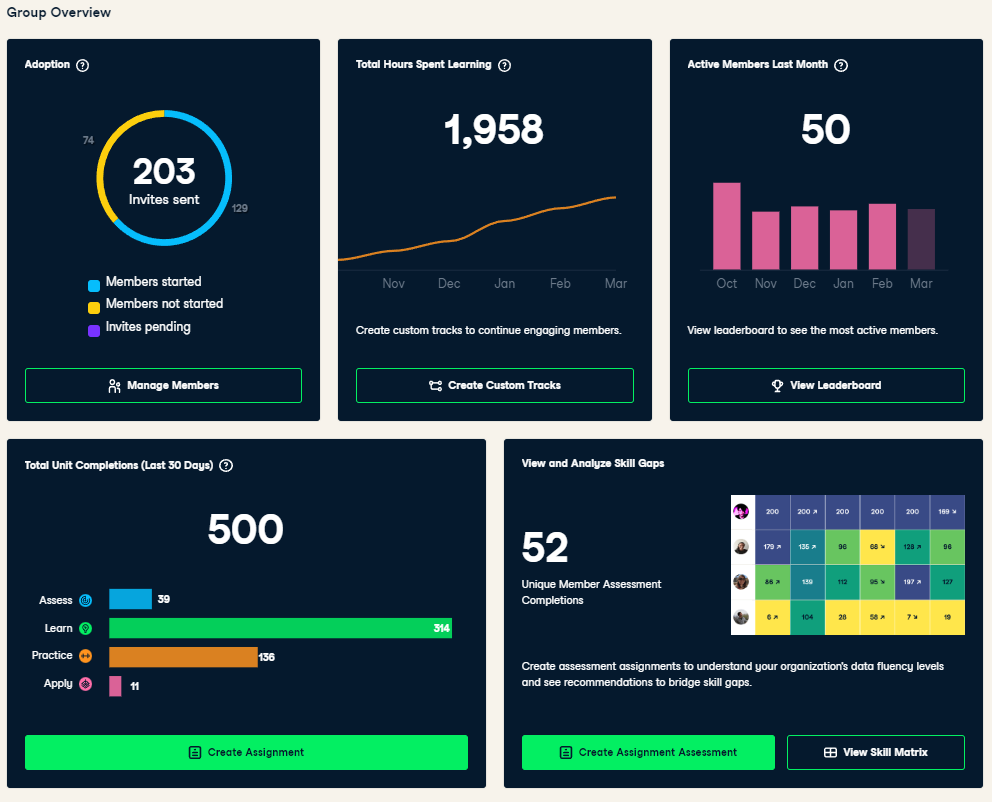
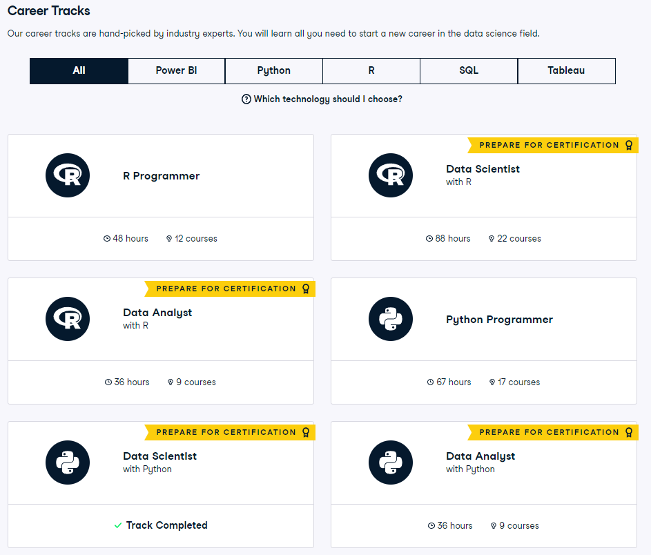
DataCamp
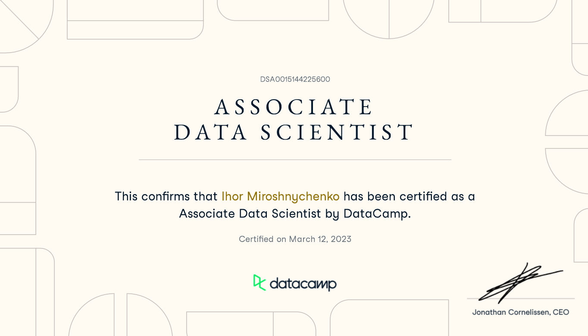
Як долучитися?
- Підписатися на канал
Data Mirosh - Зареєструйтесь на DataCamp
- Приєднайтесь до класу за посиланням
Примітка
Клас буде діяти до 11 квітня 2024 року, після чого буде буде відкрито наступний потік.
Слідкуйте за оновленнями.
Що таке хмарні обчислення?
Важливість хмарних технологій
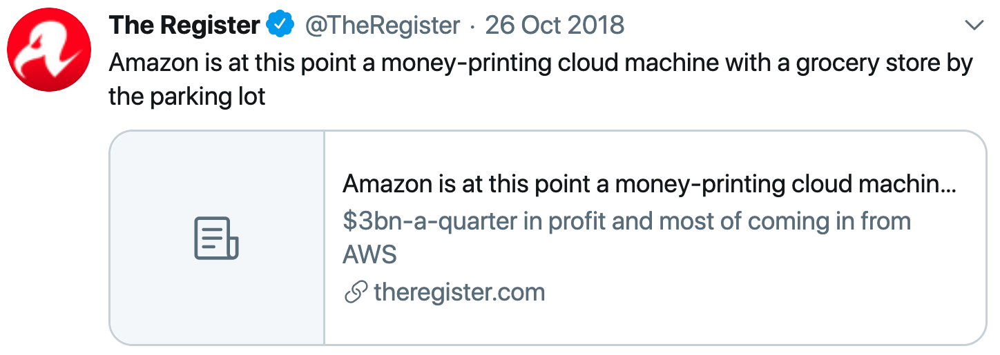Визначення хмарних обчислень
Хмарні обчислення - це надання технологічних послуг, включаючи обчислення, зберігання, бази даних, мережу, програмне забезпечення та багато іншого, через Інтернет за принципом “плати, як користуєшся”.
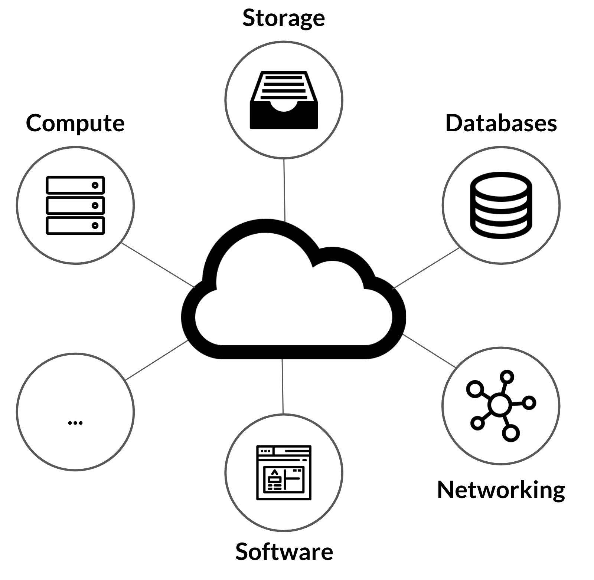
Приклад: освітній веб-сайт
Приклад: освітній веб-сайт
Приклад: освітній веб-сайт
Приклад: освітній веб-сайт
Розміщення на локальному сервері
- Купуємо сервер:
- потужність
- віддалене керування
- Розташований в офісі компанії
Розміщення на локальному сервері
- Більше людей починають користуватися сайтом
- Купуємо/орендуємо ще сервери:
- потрібен час на налаштування
- коштує дорого
Розміщення у хмарі
- Хмарний сервер
- Доступ до сервера через Інтернет
Розміщення у хмарі
- Більше людей починають користуватися сайтом
- Збільшуємо потужність.
- Платите тільки за те, що використовуєте.
- Якщо потрібно, можна зменшити потужність.
Хмара vs. локальний сервер
Локальний сервер
- Менш масштабований
- Вимагає часу на налаштування
- Не завжди виправдані витрати
Хмарний сервер
- Масштабованість
- Швидке розгортання
- Плати за використання
Краще рішення залежить від потреб.
Інші приклади використання
- Зберігання, бекап та відновлення даних
- Створення хмарних додатків
- Стрімінг аудіо та відео
- Надавати програмне забезпечення на вимогу
- Аналізу даних
- Використання штучного інтелекту
- …
Компанії
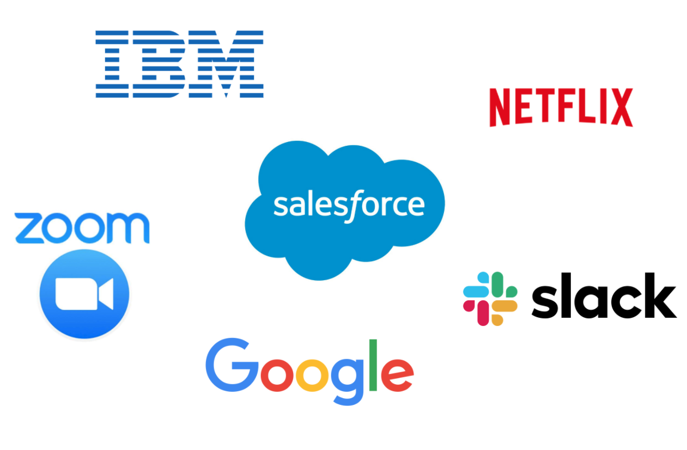Сила хмари
Хмарні сервіси
Хмарні обчислення - це надання технологічних послуг, включаючи обчислення, зберігання, бази даних, мережу, програмне забезпечення та багато іншого, через Інтернет за принципом “плати, як користуєшся”.
Хмарні сервіси
Хмарні обчислення - це надання технологічних послуг, включаючи обчислення, зберігання, бази даних, мережу, програмне забезпечення та багато іншого, через Інтернет за принципом “плати, як користуєшся”.
- Обчислення: забезпечує мізки для обробки вашого робочого навантаження
- Сховище: зберігає та зберігає дані
- Бази даних: зберігають більш структуровані набори даних
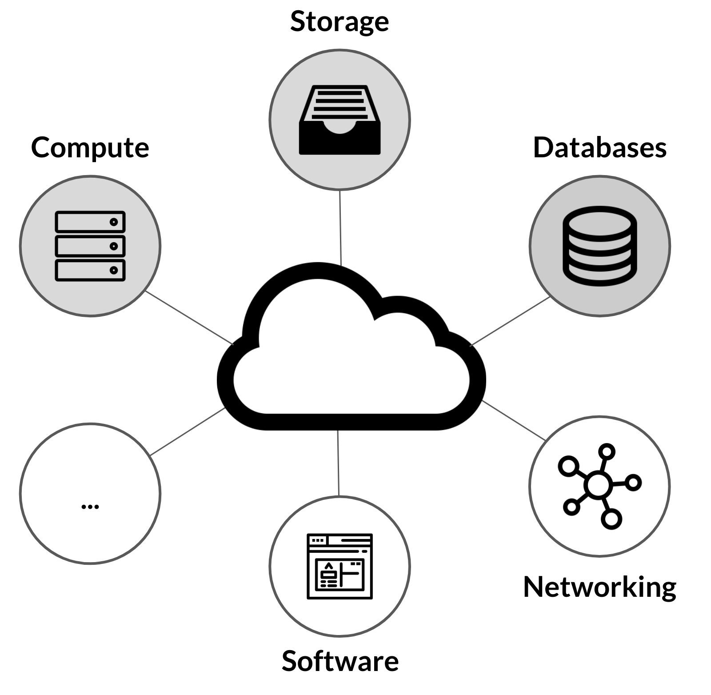
Характеристики хмарних обчислень
- Віртуалізація
- Масштабованість
- Вартість
- Швидкість
- Продуктивність
- Зростання
- Надійність
- Безпека
Віртуалізація
Фундаментальна технологія, що лежить в основі хмарних обчислень
- Фізичний сервер -> кілька віртуальних серверів
- Максимізує продуктивність окремих серверів
- Економія на масштабах
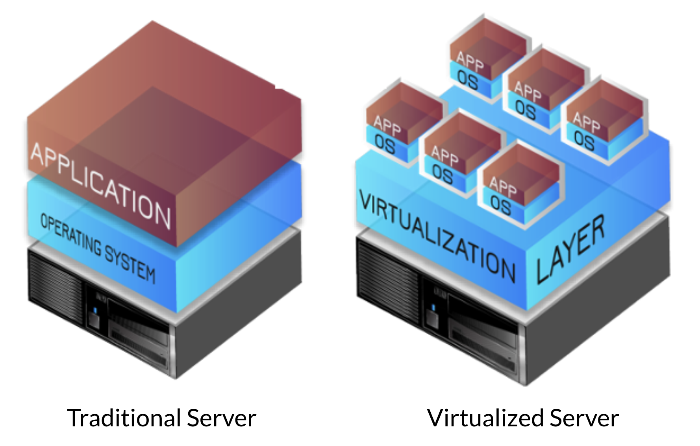
Масштабованість
Легко додавайте та видаляйте ресурси, коли вони вам потрібні
- Приклад: сайт електронної комерції
- Потребує більше ресурсів у пікові моменти
- Масштабуйте ресурси за потреби
Вартість
Сплачуйте за ресурси лише тоді, коли ви ними користуєтесь
- Оплачуйте за фактом використання
- Ніяких капітальних витрат:
- Купівля обладнання та програмного забезпечення
- Управління локальною інфраструктурою
У деяких випадках локальне рішення може бути економічно вигіднішим. Найкраще рішення залежить від конкретного випадку використання.
Швидкість
Миттєвий доступ до готових хмарних ресурсів
- Виділення ресурсів на вимогу
- Швидкий час налаштування
- Розгортайте сервіси за лічені хвилини
Продуктивність
Доступ до швидких та ефективних обчислювальних ресурсів
- Центр обробки даних: велика кількість серверів
- Хмара забезпечує доступ до:
- Всесвітня мережа дата-центрів
- Швидке та ефективне обчислювальне обладнання
Зростання
Зростайте, використовуючи широкий спектр ресурсів та послуг
- Ресурси на вимогу зменшують ризики
- Надання ресурсів через глобальну мережу: розширення географії
Надійність
Гарантована довговічність і доступність даних та сервісів
- Дані дублюються в різних дата-центрах
- Доступність забезпечується навіть у випадках стихійних лих
Безпека
Безпечне зберігання та управління вашими даними
- Зовнішня сторона, відповідальна за безпеку
- Особливо ризиковано для бізнесу у високорегульованих секторах
- Хмара стає все більш безпечною
У деяких випадках перевага може бути віддана локальному рішенню. Найкраще рішення залежить від сценарію використання
Моделі хмарних сервісів
Аналогія з машиною
Власні сили
Купівля автомобіля
Хмара
Оренда автомобіля
Моделі хмарних сервісів
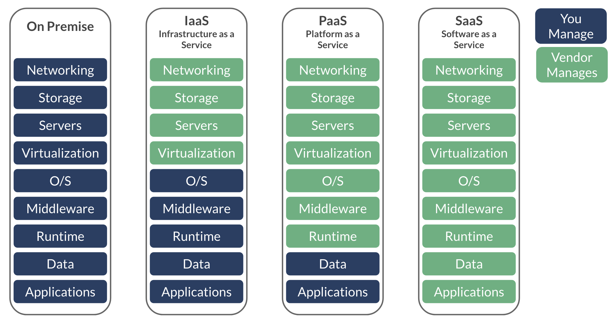Моделі хмарних сервісів
| IaaS Інфраструктура як сервіс | PaaS Платформа як сервіс | SaaS Програмне забезпечення як сервіс | |
|---|---|---|---|
| Визначення | Хмарна альтернатива власної інфраструктури | ПЗ та обладнання через інтернет для розробки додатків | ПЗ доступне через інтернет, як правило за підпискою |
| Переваги | Масштабованість | Розробнику не потрібно починати з нуля | Не потрібно встановлювати ПЗ на комп’ютер |
| Користувачі | Системний адміністратор | Розробник | Кінцевий користувач |
| Приклади | Хмарні сервери від Google, Microsoft, Amazon | Вебдодатки від Google, Microsoft, Amazon | Інтернет додатки, такі як Office365, Dropbox… |
Хмарна піраміда
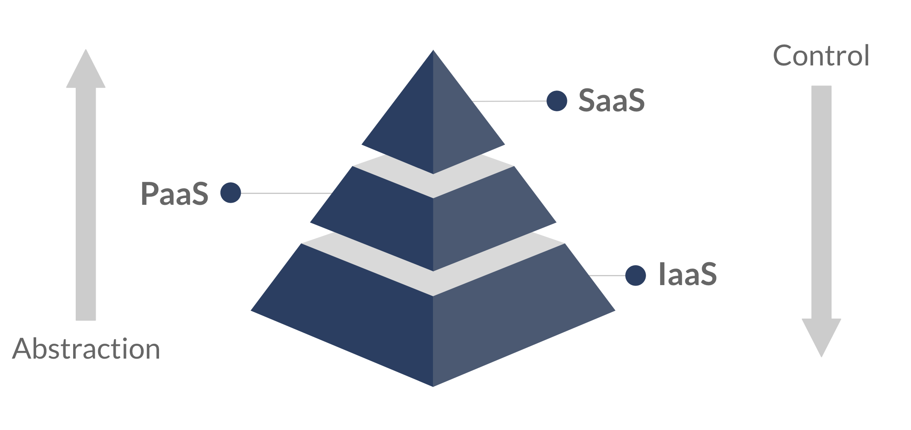Інші моделі
- FaaS (Функція як послуга)
- Різновид SaaS
- Зосереджується на функції (частині програмного забезпечення)
- наприклад, автентифікація особи, оплата транзакції
- Використовує “безсерверну” модель білінгу
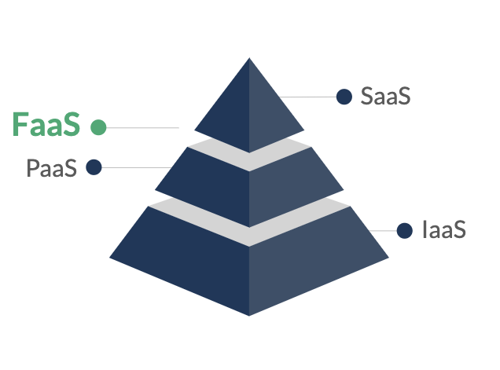
Інші моделі
- Обладнання як послуга (HaaS)
- Сховище як послуга (SaaS)
- База даних як послуга (DBaaS)
- Аварійне відновлення як послуга (DRaaS)
- Мережа як послуга (NaaS)
- …
XaaS (Anything as a Service)
Моделі розгортання хмарних сервісів
Моделі розгортання хмарних сервісів
- Важливе рішення при впровадженні хмарних технологій
- Який рівень контролю над хмарним середовищем вам потрібен?
- Три основні типи: приватні, публічні та гібридні
Приватні хмари
Хмарна інфраструктура призначена для ексклюзивного використання її орендарями.
Доступ до приватних хмар здійснюється через мережеве з’єднання.
Переваги: Прямий контроль над ресурсами та даними
Недоілки: більші початкові інвестиції
На відміну від локальної, приватна хмара використовує віртуалізацію комп’ютерних ресурсів на вимогу і може бути віддаленою.
Публічні хмари
Хмарна інфраструктура є спільною та відкритою для використання широким загалом. Вона належить і управляється постачальником хмарних послуг.
Публічні хмари доступні через Інтернет.
Переваги:
- Швидкий початок роботи з мінімальними інвестиції
- Легше масштабувати
Мінуси: Немає доступу до дата-центру та обладнання
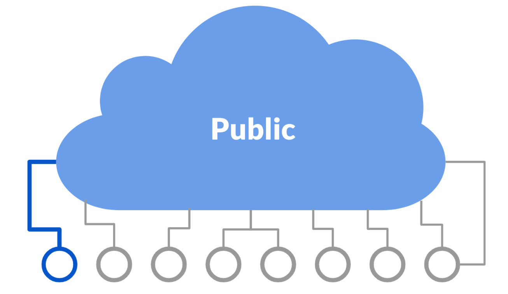
Гібридні хмари
Організація використовує комбінацію двох або більше різних моделей.
Варіанти використання:
- Зберігати конфіденційні дані в приватній хмарі а в публічній хмарі використовуйте додатки для аналітики
- Розрив хмари: коли приватна хмара вичерпує ємність, тимчасово перемістіть переповнення в публічну хмару, щоб уникнути перебоїв у роботі сервісів
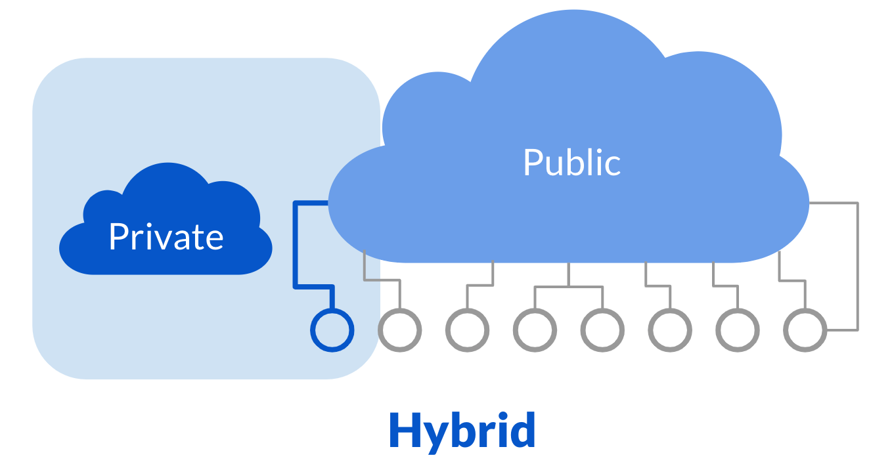
Інші моделі
- Multicloud
- Поєднання послуг різних хмарних провайдерів сервісів
- Гнучкість у виборі тарифних планів та сервісів пропозицій
- Відсутність залежності від одного постачальника
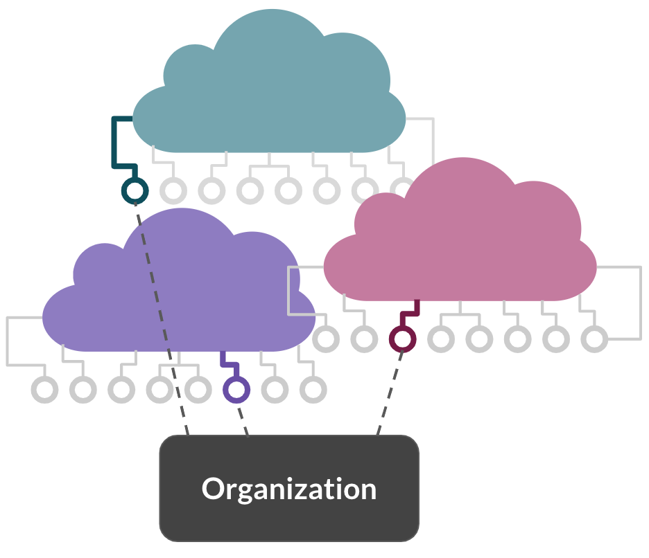
Інші моделі
- Community
- Інфраструктура, якою користується певна спільнотою для ексклюзивного використання
- Спільний інтерес напр, безпека, юрисдикція тощо
- Може управлятися та розміщуватися внутрішньо або ззовні
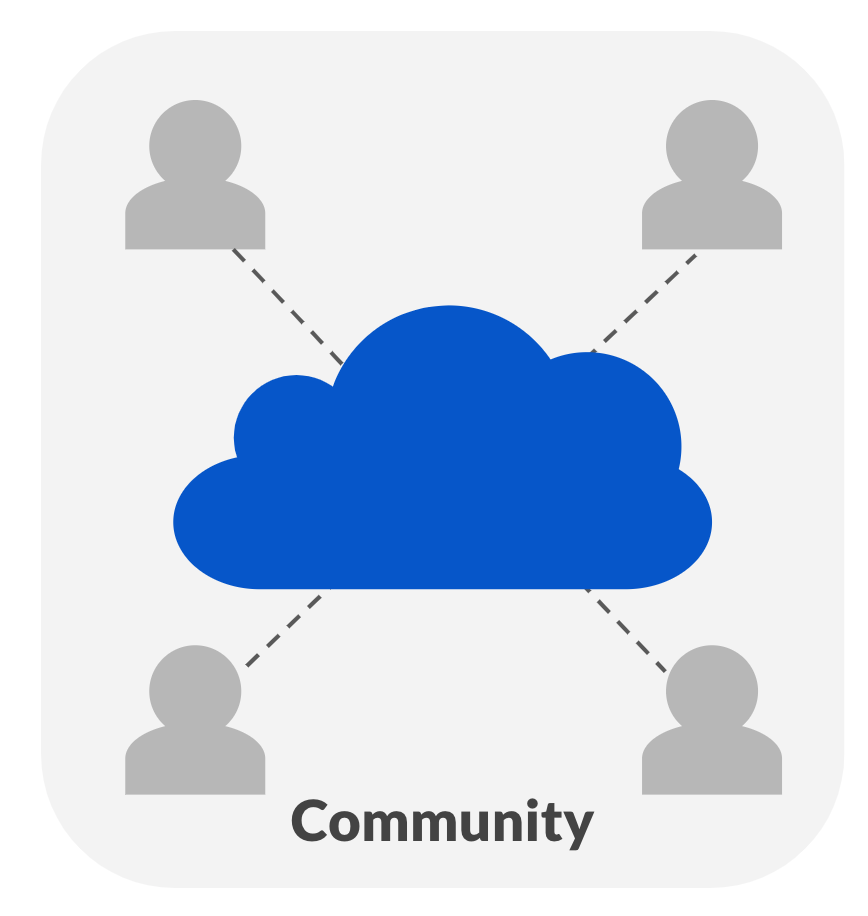
Регуляризація хмарних сервісів
Загальний регламент про захист даних (GDPR)
- Регулює, як збираються, обробляються та зберігаються персональні дані користувачів в ЄС
- Приклади:
- Користувачі повинні давати явну згоду на збір даних
- Повідомляти користувачів про будь-які порушення даних
- Інформація про персональні дані повинна бути зашифрована, анонімізована та/або псевдонімізована
- Персональні дані не можуть залишати кордони ЄС, якщо ви не можете гарантувати такий самий рівень захист
- Штраф: 20 мільйонів євро або до 4% світового річного доходу
Що таке персональні дані?
Персональні дані - це будь-яка інформація, яка стосується ідентифікованої або визначеної живої особи. Різні відомості, зібрані в сукупності, можуть призвести до ідентифікації конкретної особи, також становлять персональні дані1.
- Включає: домашню адресу, ім’я, прізвище, електронну пошту, ім’я, прізвище, адреса електронної пошти, дані про місцезнаходження, IP-адреса, расове або етнічне походження, політичні погляди, сексуальна орієнтація, дані, пов’язані зі здоров’ям.
- Інформація, що дозволяє ідентифікувати особу (PII)
Інші нормативно-правові акти
- Бразильський Lei Geral de Proteçao de Dados (LGPD)
- Каліфорнійський закон про конфіденційність споживачів (CCPA)
- Закон США про переносимість та підзвітність медичного страхування (HIPAA)
- Закон Японії про захист персональних даних
- Закон Таїланду про захист персональних даних (PDPA)
- Закон Канади про захист персональних даних та електронних документів (PIPEDA)
Хмарні професії
Ринок праці: хмарні обчислення
Обробка даних та хмара
- Data scientist
- Виконуйте дорогі в обчислювальному плані аналізи в хмарі
- Machine learning engineer
- Навчання та розгортання моделей машинного навчання в хмарі
- Data engineer
- Створює хмарні конвеєри для отримання, перетворення та зберігання великих обсягів даних
- Data analyst
- Доступ до даних у хмарі за допомогою інструментів бізнес-аналітики
Нові ролі в хмарних обчисленнях
- Cloud architect
- Cloud engineer
- DevOps engineer
- Security engineer
Cloud architect
- Архітектор рішень для хмари
- Проектуємо хмарну інфраструктуру під задану бізнес-задачу
- Плануємо розгортання інфраструктури
- Забезпечуємо масштабованість та оптимізацію витрат
Cloud engineer
- Створення, підтримка та моніторинг хмарних сервісів
- Міграція операцій у хмару
DevOps engineer
- Розробка програмного забезпечення + ІТ-операції
- Інфраструктура як код
- Забезпечте надійність, доступність та масштабованість хмари за допомогою програмного забезпечення

Security engineer
- Специфічні вимоги до безпеки
- Тестуйте та оцінюйте безпеку даних у хмарі
- Відповідальність за захист даних організації та користувачів
Хмарні провайдери
Основні гравці
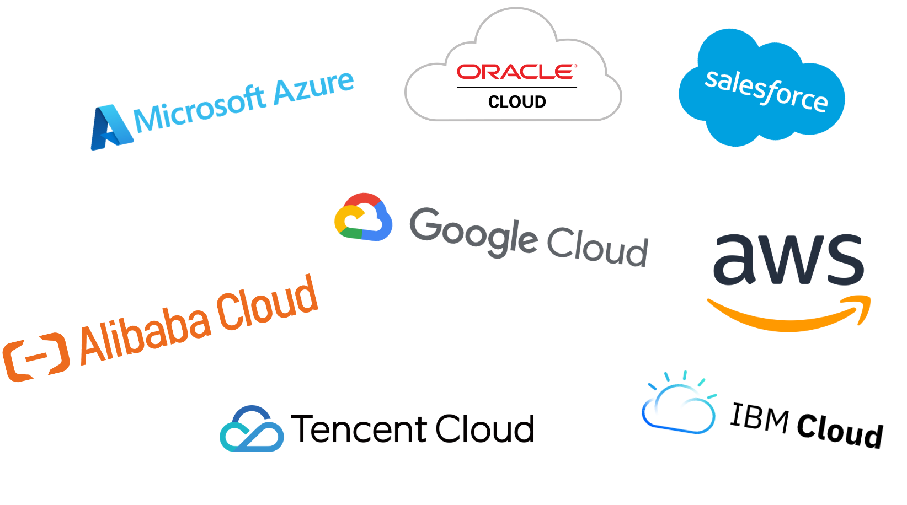Ринок
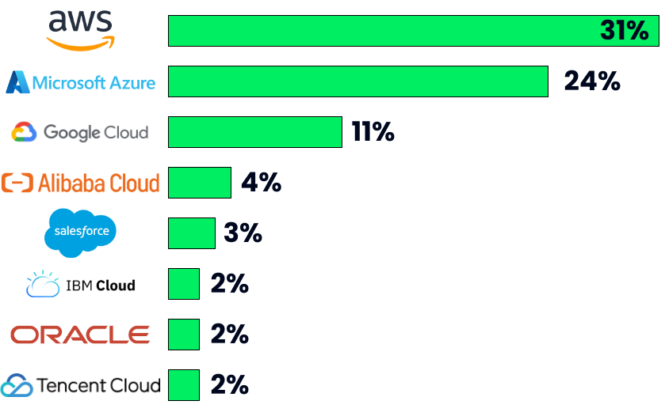Ринок
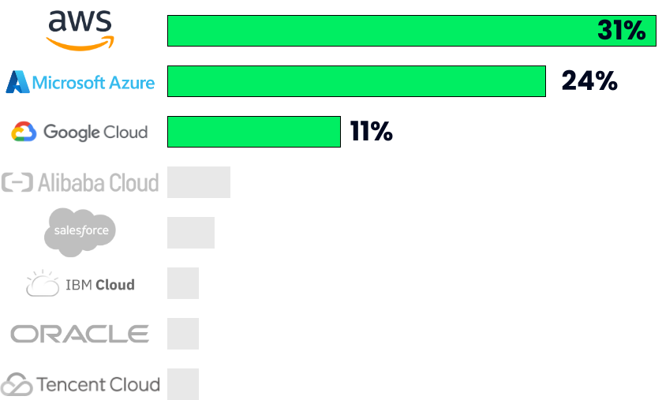Зростання хмарних обчислень
- Сервіси хмарних обчислень життєво важливі для сучасних компаній
- IaaS та PaaS пропонують значні переваги
- Забезпечують гнучкість, ефективність, інновації
- Зменште витрати, зосередитись на основному бізнесі
Робимо вибір
- Найкращий хмарний провайдер відповідає потребам компанії
- Використовуйте знання хмарних спеціалістів
- Звертайтеся до провайдерів напряму
Робимо вибір
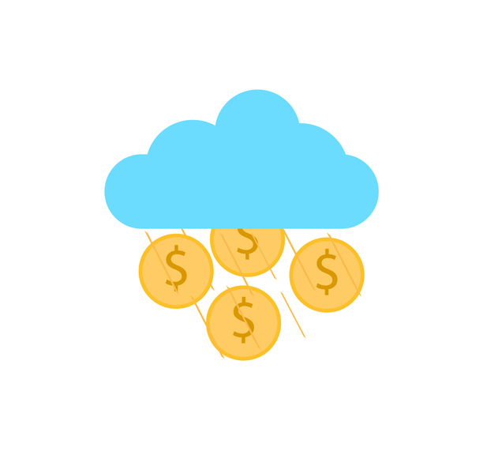
- Враховуйте поточну інфраструктуру та витрати на центри обробки даних
- Оцініть витрати на управління обладнанням та сховищем
- Оцініть витрати на амортизацію додатків, міграцію або перебудову для хмари
- Розгляньте можливість найму хмарних спеціалістів, переваги для компанії та клієнтів, а також потенційні ризики міграції в хмару
Amazon Web Services
AWS та ринок
- AWS був запущений в 2006 році (Google Cloud в 2008, Microsoft Azure у 2010)
- Широта послуг:
- Обчислення
- Зберігання
- Аналітика
- Безпека та корпоративні додатки
- Машинне навчання
- Частка ринку: 31%
AWS: хмарні сервіси
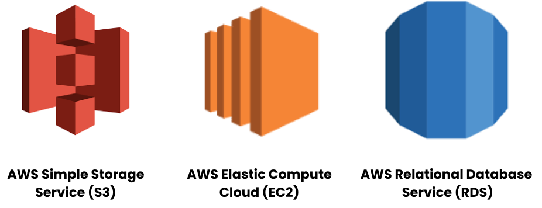AWS: обробка даних
- Amazon Redshift: обробка даних
- Amazon Kinesis: потокова обробка даних
- SageMaker: машинне навчання
AWS: клієнти
AWS: кейси
Компанія: NerdWallet
Проблема: розгортання моделей машинного навчання займає занадто багато часу
Рішення:
- Amazon Sagemaker (хмарна платформа, що збирає процеси машинного навчання)
AWS: кейси
Результати:1
- Скоротити час навчання до кількох днів
- Зменшення витрат на навчання на 75%
Microsoft Azure
Azure та ринок
- Інтеграція з продуктами Microsoft
- Частка ринку: 24%
Azure: хмарні сервіси
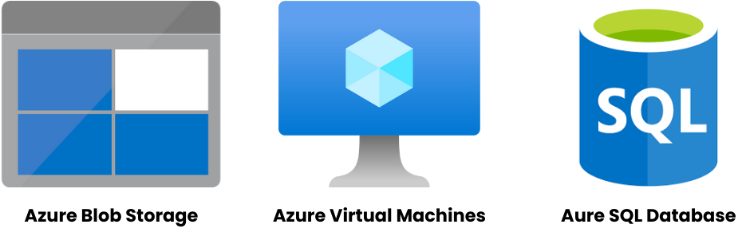Microsoft Fabric
- Інтегрує різні рішення Microsoft для корпоративного використання
- Охоплює рух даних, науку про дані, аналітику в реальному часі, бізнес-аналітику
- Ключова сервісна пропозиція від корпорації Майкрософт
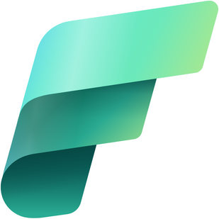
Azure: обробка даних
- Data Lake Storage (зберігання даних до очищенням)
- Stream Analytics (аналітика в реальному часі)
- Machine Learning (навчання та розгортання моделі машинного навчання)
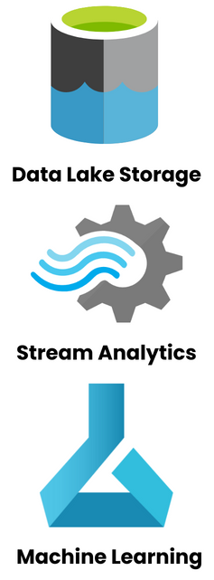
Azure: клієнти
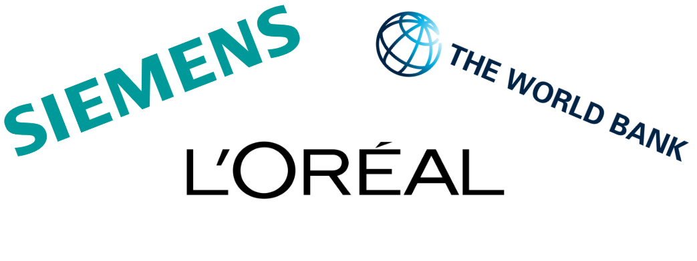Azure: кейс
Компанія: Ottawa Hospital
Потреба: економічно ефективне та безпечне рішення для аварійного відновлення (продовження життєво важливих операцій після катастрофи)
Рішення:
- Microsoft IaaS (безпечне, масштабоване середовище)
- Azure Storage (дані медичних зображень)
- Azure Site Recovery (автоматичне розгортання процеси відновлення)
Azure: кейси
Результати1:
- Новий безпечний, сучасний, сумісний з політикою сайт аварійного відновлення
- Відповідає правилам конфіденційності даних
- Заощаджено ~50% витрат на аварійне відновлення
Google Cloud
Google Cloud та ринок
- Google Cloud Anthos
- Запускайте гібридні мультихмарні рішення:
- керуйте та розгортайте в декількох хмарах провайдерів
- Частка ринку: 11%
Google Cloud: хмарні сервіси
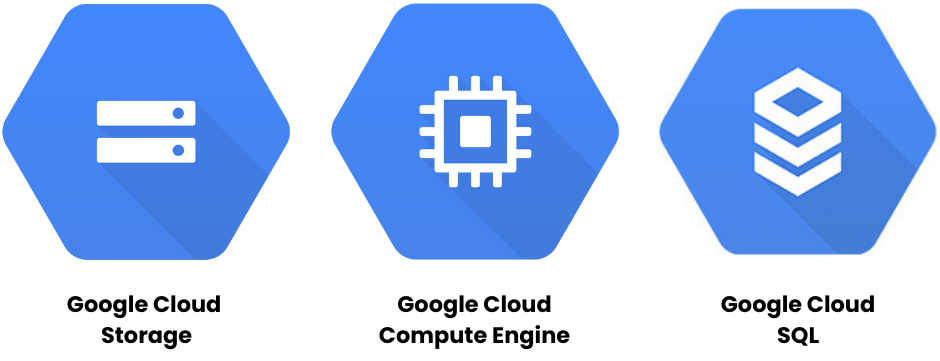Google Cloud: обробка даних
- Big Query (сховище даних)
- Dataflow (пакетна та потокова обробка даних)
- AutoML (навчання моделей машинного навчання та їх розробка)
Google Cloud: клієнти
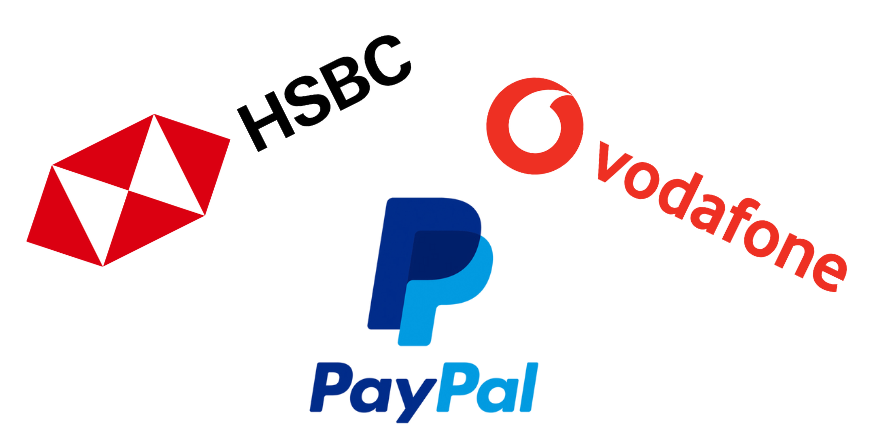Google Cloud: кейс
Компанія: Lush
Потреба: Підвищення доступності та стабільності платформи електронної комерції під час пікових навантажень
Рішення:
- Перенести всю глобальну інфраструктуру в Google Cloud
- Google Cloud Compute Engine
- Дані про клієнтів та продукти в Google Cloud SQL
Google Cloud: кейс
Результати1:
- Жодних відключень на Boxing Day
- Зниження витрат на хостинг на 40%.
- Пізніше розгорнули додаток для розпізнавання зображень для надання інформації про свій продукт та зменшити кількість пластикової упаковки в Google Cloud AI
Дякую за увагу!